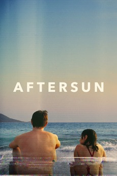
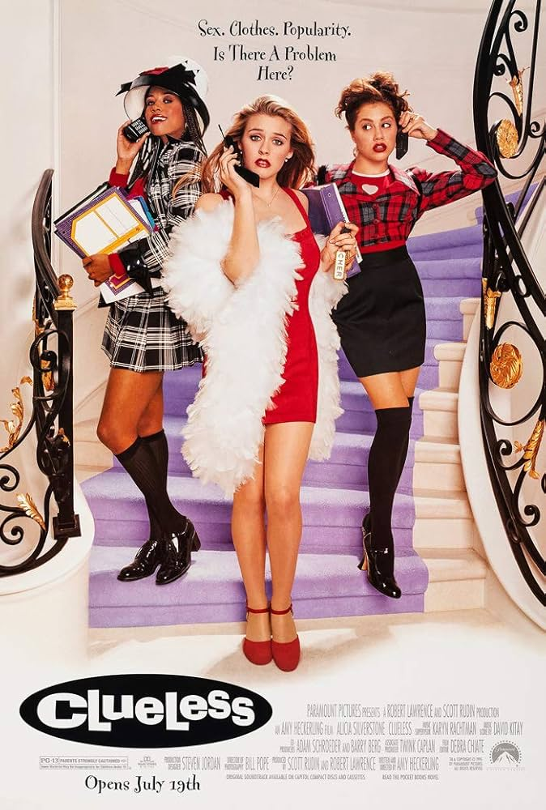
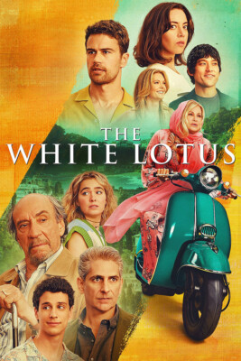

@alex · Sydney
Films, TV, and a good ending.


12 films
Watched · 14 Sep

Watched · 12 Sep
Share preview · concept only
Alex Morgan · @alex on PLOT
Proposed: a ready-to-share image for Stories and messages, plus the public profile link. No link is copied or published by this mockup.